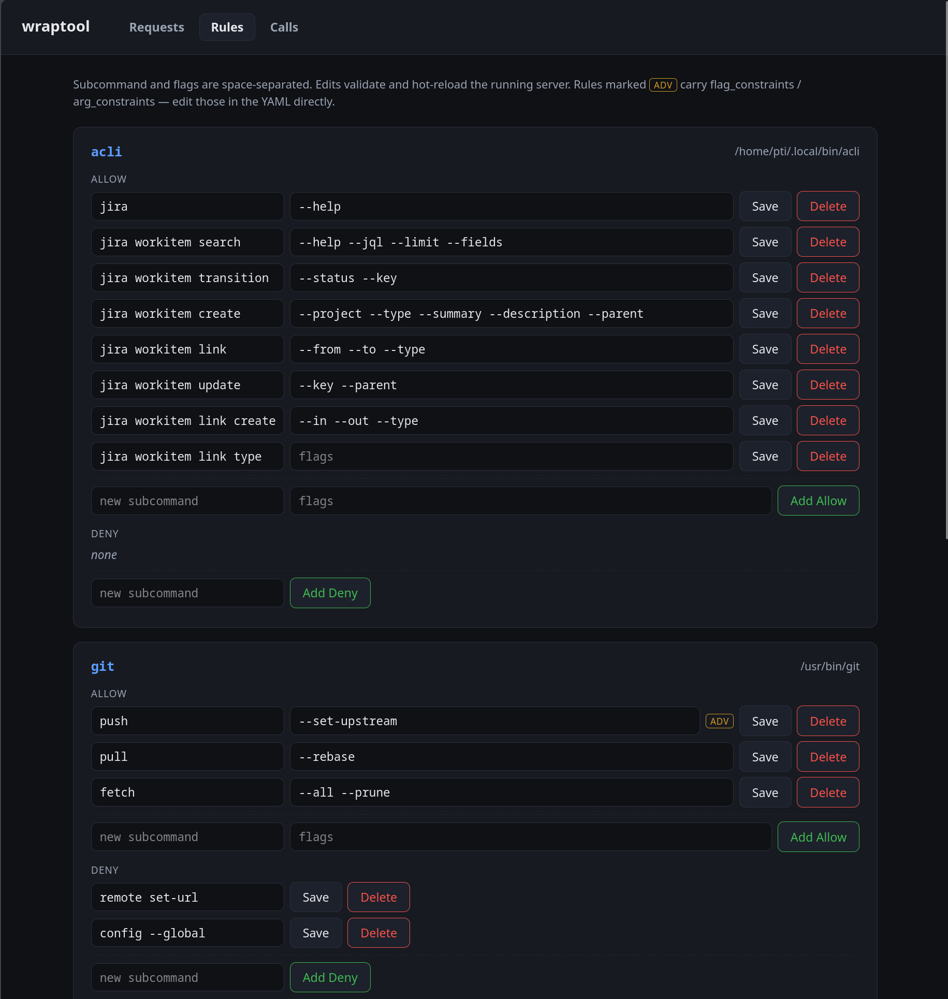

Review UI
The review UI is an operator-facing dashboard for reviewing capability requests — the same approve / deny / apply workflow as the wraptool requests CLI, in the browser.
It runs inside the serve process on its own listener, independent of the MCP transport, so it works regardless of transport. It reads the JSONL request log and applies approvals to the YAML config via the same merge as requests approve --apply; the running server then hot-reloads the change.
The review UI is operator-facing, not agent-facing. Bind it to 127.0.0.1 only. It is a separate listener from the MCP transport by design, but it is not unreachable from the agent: under the Guix runtime’s shared host network namespace, loopback — and so this listener — is routable from inside the container. Its auth_token_file is what keeps it private, not network separation.
Enabling it
Add an admin block separate from the MCP listener:
mcp:
transport: sse
listen: 127.0.0.1:8717 # agent-facing MCP transport
auth_token_file: ~/.config/wraptool/mcp-token
admin:
listen: 127.0.0.1:8718 # operator-facing UI — localhost only
auth_token_file: ~/.config/wraptool/admin-tokenOmit admin (or leave admin.listen empty) to disable the UI. Its auth_token_file is required and must be different from mcp.auth_token_file; the MCP token is forwarded to coding containers, whereas the admin token must remain host-only. When using wraptool up, the admin token file must also resolve outside the writable workspace, including through symlinks.
Opening it
Run:
wraptool admin openIt reads admin.listen and admin.auth_token_file from the config, builds the login URL, and opens it in the default browser — no token to copy. Use --print to print the URL instead of opening a browser.
On startup wraptool also logs a click-through URL with the token embedded:
wraptool admin ui: http://127.0.0.1:8718/requests?token=…A wildcard bind (0.0.0.0 / ::) is rewritten to 127.0.0.1 in that URL so the link is followable from the operator’s machine.
Authentication
With admin.auth_token_file, access is granted from any of:
| Method | Use |
|---|---|
| Session cookie | set automatically after the first authenticated request |
?token=… query |
the click-through URL; validates, sets the cookie, then redirects to a clean URL (token stripped) |
| Login form | shown on any unauthenticated request; submit the token to sign in |
Authorization: Bearer … |
for scripts / curl |
All comparisons are constant-time. The session cookie is HttpOnly, SameSite=Lax. Static assets (CSS) are served without auth so the login page renders styled.
The review UI never runs without authentication. Loopback is reachable from Guix containers that share the host network namespace and is not an authorization boundary.
The token is written to the server log as part of the click-through URL. Treat that log as secret material: wraptool up writes serve.log under the XDG data directory with mode 0600, but direct wraptool serve uses its caller’s output destination. Do not ship, share, or collect either.
Reviewing requests
GET /requestslists requests newest-first, filterable by status (Pending / Approved / Denied / All). Pending requests show inline Approve and Deny controls.- Approve with apply to config checked runs
config.ApplyRequest— the same merge asrequests approve --apply. Unchecked, it marks the request approved and leaves the config for you to edit by hand. - Deny records an optional reason.
Applied approvals trigger the config file-watch reload, so the new capability is live without restarting the server. If an apply fails (unknown tool, deny-rule conflict, validation error) the request is still marked approved and the UI surfaces the error so you can edit the config manually.
Managing rules
GET /rules lists every configured tool with its allow and deny rules and provides full CRUD, built on the same primitives as request-apply — the YAML node-tree editor (config.AddRule / UpdateRule / DeleteRule), round-trip validation, atomic write, and file-watch hot-reload.

acli and git) with its binary path, an ALLOW section of editable subcommand + flags rows, a DENY section, inline Save / Delete, and Add Allow / Add Deny. Rules carrying flag_constraints / arg_constraints show an ADV badge.- Add a rule: fill the new subcommand (and, for allow rules, flags) row under a tool and submit. Subcommand and flags are space-separated.
- Save edits a rule’s subcommand and flags in place. Other keys on the rule —
flag_constraints,arg_constraints,deny_flags, comments — are preserved; rules carrying them are markedadv(edit those parts in the YAML directly). Removing a flag also prunes its now-orphanedflag_constraintsentry. - Delete removes the rule.
Every edit is validated before it is written, so the UI refuses changes that would break the config — an invalid flag name, a deny/allow conflict, or deleting a tool’s last allow rule (a tool must keep at least one). Save and Delete carry the rule’s original subcommand as a hidden field; if the on-disk config changed since the page loaded, the edit is refused rather than clobbering the newer version — reload and retry.
The adv marker means a rule has constraints the UI does not edit. It still lets you change that rule’s subcommand and flags; only the constraint blocks themselves require a YAML edit.
Restart to enable
The review UI listener is bound once at startup. Adding or changing the admin block requires restarting the server (wraptool server start) — config hot-reload swaps tools and policy but does not start or move the web listener.